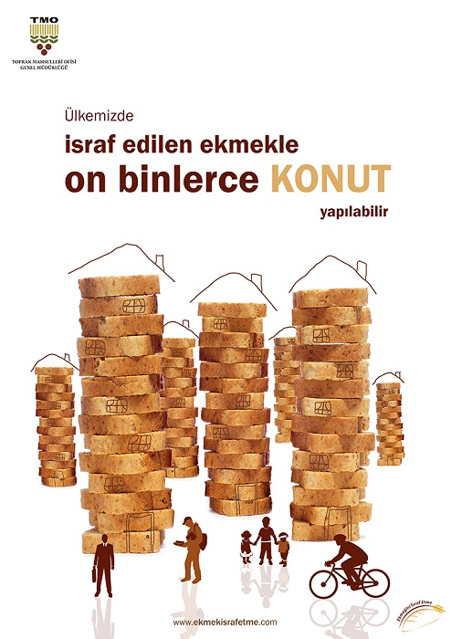

Fisik Sport
2021.03.24 18:32
Due to Covid-19 - please expect some delays on your orders. Thank you for your patience Akun MASUK Daftar Toggle nav Menu Trending New Arrivals Sports Footwear Football Futsal Running Volleyball Basketball Sandals Apparel Football Running Socks Active Hijab Equipment & Accessories Bags Balls Gloves Shoe Care Others Socks Running Lifestyle Footwear Brands Andrrows Lotto Mizuno Nike Persebaya Piero Puma Specs Mitre Adidas Umbre SpecsFISIK Category Apparel Tops Football Shirts Jerseys Sale Brand Adidas Nike Puma Piero Specs Mitre Footwear volleyball Disc 20% BUY 2 GET 30% Crazy Deals BUY 2 GET 50% Fixed Price Long Weekend Deals Women Collections Crazy Big Deals Payday Promo Brands All Brands A B C D E F G H I J K L M N O P Q R S T U V W X Y Z # A
A
Adidas
156
A
AGLXY
0
A
Andrrows
3
A
Asics
0
BB
Billionaire Boys Club
0
CC
Casio
0
C
Crep Protect
0
LL
Lotto
20
MM
Mitre
13
M
Mizuno
22
NN
Nike
138
PP
Persebaya
0
P
Persib
0
P
Piero
41
P
Puma
59
SS
shoelace
0
S
Specs
129
S
Stussy
0
UU
Umbre
4
New Arrivals SportsBack
FOOTWEAR
Back
football futsal running volleyball basketball sandalsAPPAREL
Back
football runningEQUIPMENT & ACCESSORIES
Back
bags balls gloves shoe care others socks LifestyleBack
Footwear BrandsBack
Andrrows Adidas Lotto Mizuno Mitre Nike Piero Puma Specs Umbre Jerseys SALE MASUK Daftar Akun Baru Akun Pencarian Akun MASUK Daftar KeranjangReal email address is required to social networks
MASUK
MASUK Atau Masuk Dengan Masuk dengan Facebook Masuk dengan GoogleLupa password
FOOTWEAR APPAREL EQUIPMENT ACCESSORIES
Shop Now
Shop Now TRENDING PRODUCTS see more FAVORITKAN
Puma
prowl slip on wns puma white-ignite pink Rp 599.400 Rp 999.000 40% [ 40% OFF ]Sale
FAVORITKANSpecs
viper fg-astral aura/mango orange Rp 549.800 FAVORITKANSpecs
viper fg-black/bright red Rp 549.800 FAVORITKANNike
nike mercurial superfly 7 academy ic-mtlc bomber gry/black-particle grey Rp 1.379.000 FAVORITKANNike
nike mercurial vapor 13 academy ic-mtlc bomber gry/black-particle grey Rp 1.199.000 FAVORITKANNike
nike flyby mid-black/metallic gold-dk smoke grey Rp 799.000 FAVORITKANNike
nike air max impact-black/black-black Rp 1.279.000 FAVORITKANSpecs
avalanche fg-vibrant orrange/smoke gray/white Rp 499.800 FAVORITKANSpecs
accelerator lightspeed ii pro battlepack fg -naval assault Rp 549.800 FAVORITKANSpecs
barricada fuerza pro fg-triple black Rp 499.800 FAVORITKANSpecs
barricada maestro xt pro in-dark navy/metalic bronze Rp 499.800 FAVORITKANSpecs
accelerator lightspeed 20 in-triple black Rp 549.800 FAVORITKANSpecs
accelerator lightspeed ii pro battlepack in-blackhawk Rp 384.860 Rp 549.800 30% [ 30% OFF ]Sale
Powered by MAGENEST FEATURED PRODUCTS INSTAGRAM //
Shop Insta
See More Shop NowShop Now
Shop Now
Shop Now
Shop Now
Shop Now
Shop Now
Shop Now
Shop Now
Shop Now
Shop Now
Shop Now
Shop Now
Shop Now
Shop Now
EXCLUSIVE PRODUCTS
Menyediakan produk baru yang tidak dijual di toko lain
100% ORIGINAL
Produk berkualitas dengan jaminan keaslian 100%
BEST PRICE EVER
Koleksi produk lengkap
dengan harga yang bersaing
OUR COMPANY
Tentang Kami Lokasi Toko Hubungi Kami Kebijakan Hak Cipta Kebijakan Privasi Syarat dan KetentuanSERVICE
Lacak Pesanan Saya Cara Berbelanja Cara Pengembalian Info Pengiriman FAQCONNECT WITH US
Fb InstaWE ACCEPT
DELIVERY SUPPORT
Fisik Sport © 2021 All Rights Reserved
- 7 Tujuan Utama Latihan Kondisi Fisik Penting Dilakukan
- Fizik SPM 2016 (Sebenar)
- Sports - Fisik
- Cara Mengisi Ciri Fisik Skck Online - SKCK
- (DOC) . PETUNJUK TEKNIS PENGUKURAN REALISASI FISIK ...
- Fisik Motorik | perdaniseptianarahayu1001110042
- Gelombang (Fizik T5) - SlideShare
- FIZIK 4531 Oktober 2020
- PEMERIKSAAN FISIK BAYI BARU LAHIR - WordPress.com
- Kondisi fisik wilayah 1 dataran rendah 2 curah hujan ...
- 7 Tujuan Utama Latihan Kondisi Fisik Penting Dilakukan
Kondisi fisik wilayah: (1) dataran rendah; (2) curah hujan tinggi; (3) merupakan daerah aliran sungai. Penggunaan wilayah sesuai kondisi fisik tersebut adalah sebagai daerah .... A. perkebunan B. pertanian C. waduk irigasi D. pembangkit listrik E. industri pemintalan 39. Perhatikan karakteristik negara berikut! 1) Pendapatan perkapita tinggi.
- Fizik SPM 2016 (Sebenar)
Teknik pemeriksaan fisik dada terbagi menjadi empat, yaitu inspeksi, palpasi, perkusi, dan auskultasi. Pemeriksaan ini sederhana dan cukup mudah dilakukan tanpa menimbulkan komplikasi. Pemeriksaan fisik dada
- Sports - Fisik
SULIT SMK Khir Johari SULIT 3 Section A Bahagian A [60 marks] [60 markah] Answer all questions in this section. Jawab semua soalan dalam bahagian ini. 1 Diagram 1.1 shows a liquid-in-glass thermometer. Rajah 1.1 menunjukkan satu termometer cecair-dalam–kaca. DIAGRAM 1.1
- Cara Mengisi Ciri Fisik Skck Online - SKCK
Keadaan fisik dari klien wajib diketahui dan dikaji oleh perawat / bidan maupun tenaga kesehatan lainnyayang memberikan asuhan. Anamnesa dan pemeriksaan fisik merupakan salah satu data penunjang dan mengetahui masalah apa yang dialami oleh klien agar diagnosa dapat ditegakkan. A.
- (DOC) . PETUNJUK TEKNIS PENGUKURAN REALISASI FISIK ...
Fizik SPM 2016 (Sebenar) - Free download as Powerpoint Presentation (.ppt / .pptx), PDF File (.pdf) or view presentation slides online. fz
- Fisik Motorik | perdaniseptianarahayu1001110042
SULIT 6 4531 ©Hak Cipta MPSM Negeri Perlis [Lihat sebelah SULIT 6 (a) Current produced when there is a relative motion between the
- Gelombang (Fizik T5) - SlideShare
Perkembangan fisik manusia meliputi berbagai aspek yang dipengaruhi sistem dan fungsi organ tubuh. Sistem syaraf yang sangat mempengaruhi perkembangan kecerdasan dan emosi. Sistem tulang dan otot-otot yang mempengaruhi perkembangan kekuatan dan kemampuan motorik. Sistem hormonal atau endokrin, yang menyebabkan munculnya pola-pola tingkah laku ...
- FIZIK 4531 Oktober 2020
Halodoc, Jakarta - Tentara adalah salah satu pekerjaan yang harus ditunjang oleh fisik yang prima.Cara bergabung ke sekolah militer dan menjadi tentara adalah melalui Seleksi Akademi Militer. Pada seleksi tersebut, terdapat beberapa tes yang akan dilakukan, salah satunya adalah tes fisik.Walau begitu, fisik bukan satu-satunya hal yang akan diukur.
- PEMERIKSAAN FISIK BAYI BARU LAHIR - WordPress.com
Pengukuran realisasi fisik dan non fisik kegiatan secara umum adalah kegiatan penetapan progres pekerjaan berdasarkan kemajuan pekerjaan. Pengukuran dilakukan dari a. Tujuan, Pernyataan sederhana yang jelas tentang dampak atau hasil yang akan dicapai oleh proyek b. Hasil, Tetapkan perubahan tingkat penerima dan populasi yang dibutuhkan untuk ...
- Kondisi fisik wilayah 1 dataran rendah 2 curah hujan ...
2. Geografi fisik. Geografi fisik adalah salah satu bentuk dari fenomena yang ada di permukaan bumi dengan proses terhadap penekanan geografis dan akan menjadi dasar kehidupan manusia, diantaranya adalah. Studi geologi – adalah salah satu masalah tentang bagaimana bumi telah terbentuk dan akan mengalami perubahan dengan seiring berjalannya waktu.
Kondisi fisik wilayah: (1) dataran rendah; (2) curah hujan tinggi; (3) merupakan daerah aliran sungai. Penggunaan wilayah sesuai kondisi fisik tersebut adalah sebagai daerah .... A. perkebunan B. pertanian C. waduk irigasi D. pembangkit listrik E. industri pemintalan 39. Perhatikan karakteristik negara berikut! 1) Pendapatan perkapita tinggi.
Teknik pemeriksaan fisik dada terbagi menjadi empat, yaitu inspeksi, palpasi, perkusi, dan auskultasi. Pemeriksaan ini sederhana dan cukup mudah dilakukan tanpa menimbulkan komplikasi. Pemeriksaan fisik dada
SULIT SMK Khir Johari SULIT 3 Section A Bahagian A [60 marks] [60 markah] Answer all questions in this section. Jawab semua soalan dalam bahagian ini. 1 Diagram 1.1 shows a liquid-in-glass thermometer. Rajah 1.1 menunjukkan satu termometer cecair-dalam–kaca. DIAGRAM 1.1
Keadaan fisik dari klien wajib diketahui dan dikaji oleh perawat / bidan maupun tenaga kesehatan lainnyayang memberikan asuhan. Anamnesa dan pemeriksaan fisik merupakan salah satu data penunjang dan mengetahui masalah apa yang dialami oleh klien agar diagnosa dapat ditegakkan. A.
Fizik SPM 2016 (Sebenar) - Free download as Powerpoint Presentation (.ppt / .pptx), PDF File (.pdf) or view presentation slides online. fz
SULIT 6 4531 ©Hak Cipta MPSM Negeri Perlis [Lihat sebelah SULIT 6 (a) Current produced when there is a relative motion between the
Perkembangan fisik manusia meliputi berbagai aspek yang dipengaruhi sistem dan fungsi organ tubuh. Sistem syaraf yang sangat mempengaruhi perkembangan kecerdasan dan emosi. Sistem tulang dan otot-otot yang mempengaruhi perkembangan kekuatan dan kemampuan motorik. Sistem hormonal atau endokrin, yang menyebabkan munculnya pola-pola tingkah laku ...
Halodoc, Jakarta - Tentara adalah salah satu pekerjaan yang harus ditunjang oleh fisik yang prima.Cara bergabung ke sekolah militer dan menjadi tentara adalah melalui Seleksi Akademi Militer. Pada seleksi tersebut, terdapat beberapa tes yang akan dilakukan, salah satunya adalah tes fisik.Walau begitu, fisik bukan satu-satunya hal yang akan diukur.
Pengukuran realisasi fisik dan non fisik kegiatan secara umum adalah kegiatan penetapan progres pekerjaan berdasarkan kemajuan pekerjaan. Pengukuran dilakukan dari a. Tujuan, Pernyataan sederhana yang jelas tentang dampak atau hasil yang akan dicapai oleh proyek b. Hasil, Tetapkan perubahan tingkat penerima dan populasi yang dibutuhkan untuk ...
2. Geografi fisik. Geografi fisik adalah salah satu bentuk dari fenomena yang ada di permukaan bumi dengan proses terhadap penekanan geografis dan akan menjadi dasar kehidupan manusia, diantaranya adalah. Studi geologi – adalah salah satu masalah tentang bagaimana bumi telah terbentuk dan akan mengalami perubahan dengan seiring berjalannya waktu.
